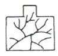
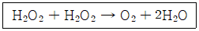

식품기사 (2020-08-22 기출문제)
1과목: 식품위생학
1. 주용도가 식품의 색을 제거하기 위해 사용되는 식품첨가물이 아닌 것은?
- 과황산암모늄
- 메타중아황산칼륨
- 메타중아황산나트륨
- 무수아황산
(정답률: 64%)

2. 명반(건조물 : 소명반)의 식품첨가물 명칭은?
- 황산암모늄
- 황산알루미늄칼륨
- 황산나트륨
- 황산동
(정답률: 56%)
3. 집단급식소, 식품접객업소(위탁급식영업) 및 운반급식(개별 또는 벌크포장)의 관리로 적합하지 않은 것은?
- 건물 바닥, 벽, 천장 등에 타일 등과 같이 홈이 있는 재질을 사용한 때에는 홈에 먼지, 곰팡이, 이물 등이 끼지 아니하도록 청결하게 관리하여야 한다.
- 원료 처리실, 제조ㆍ가공ㆍ조리실은 식품의 특성에 따라 내수성 또는 내열성 등의 재질을 사용하거나 이러한 처리를 하여야 한다.
- 출입문, 창문, 벽, 천장 등은 해충, 설치류 등의 유입 시 조치할 수 있도록 퇴거경로가 확보되어야 한다.
- 선별 및 검사구역 작업장 등은 육안확인에 필요한 조도(540룩스 이상)를 유지하여야 한다.
(정답률: 82%)
4. 식품 및 축산물 안전관리인증기준의 식품제조ㆍ가공업 선행요건관리 중 인증평가 및 사후관리 시 종합평가에서 전년도 정기조사ㆍ평가의 개선조치를 이행하지 않은 경우 해당 항목에 대한 평가 점수 기준은? (단, 필수항목의 미흡은 제외한다.)
- 해당항목 평가점수 5점 배점 중 2점 부여
- 항목이 1개라도 부적합으로 판정
- 해당 평가 항목의 0점 부여
- 해당 항목에 대한 감점 점수의 2배를 감점
(정답률: 71%)
5. 가축에 이상발정 증세를 초래하여 가축의 생산성 저하와 관련이 있는 곰팡이 독소는?
- 맥각독
- 제랄레논
- 오크라톡신
- 파툴린
(정답률: 60%)
6. 식품 중의 acrylamide에 대한 설명으로 틀린 것은?
- 반응성이 높은 물질이다.
- 탄수화물이 많은 식물성 식품보다는 단백질이 많은 동물성 식품에서 많이 발견된다.
- 신경계통에 이상을 일으킬 수 있다.
- 식품을 삶아서 가공하는 경우에는 생성되는 양이 적다.
(정답률: 78%)
7. 식품 중 이물에 대한 검사방법과 검체의 특성이 잘못 연결된 것은?
- 체분별법 - 분말 형태 검체
- 여과법 - 액상검체
- 정치법 - 곡류나 곡분 등의 고체검체
- 부상법 - 동물의 털이나 곤충 등의 가벼운 물질
(정답률: 72%)
8. 빵류, 치즈류, 잼류에 사용할 수 있는 보존료는?
- potassium sorbate
- D-sorbitol
- sodium propionate
- benzoic acid
(정답률: 66%)
9. 리스테리아균에 의한 식중독의 예방대책이 아닌 것은?
- 살균이 안 된 우유를 섭취하지 않는다.
- 냉동식품은 냉동온도(-18℃이하) 관리를 철저하게 한다.
- 식품의 가공에 사용되는 물의 위생을 철저하게 관리한다.
- 고염도, 저온의 환경으로 세균을 사멸시킨다.
(정답률: 85%)
10. 다음 중 병원성 세균과 거리가 먼 것은?
- Salmonella typhi
- Listeria monocytogenes
- Alteromonas putrifaciens
- Yersinia enterocolitica
(정답률: 75%)
11. 식품 및 축산물 안전관리인증기준에 의한 선행요건 중 식품제조업소에서의 냉장ㆍ냉동시설ㆍ설비 관리로 잘못된 것은?
- 냉장시설은 내부온도를 10℃이하로 한다(단, 신선편의식품, 훈제연어, 가금육은 제외한다.).
- 냉동시설은 -18℃ 이하로 유지한다.
- 냉장ㆍ냉동시설의 외부에서 온도변화를 관찰할 수 있어야 한다.
- 온도 감응 장치의 센서는 온도의 평균이 측정되는 곳에 위치하도록 한다.
(정답률: 74%)
12. 인수공통감염병과 관계가 먼 것은?
- 결핵
- 탄저병
- 이질
- Q열
(정답률: 79%)
13. 유구조충에 대한 설명으로 틀린 것은?
- 돼지고기를 숙주로 돼지 소장에서 부화한 후 돼지 신체 조직으로 옮겨진다.
- 머리에 갈고리가 있어 갈고리촌충이라고도 한다.
- 60℃로 가열하면 완전히 사멸된다.
- 성충이 기생하면 복부 불쾌감, 설사, 구토, 식욕항진 등을 일으킨다.
(정답률: 79%)
14. 채소류로부터 감염되는 기생충은?
- 폐흡충
- 회충
- 무구조충
- 선모충
(정답률: 87%)
15. 식품조사(food irradiation) 처리에 대한 설명으로 틀린 것은?
- 60Co을 선원으로 한 γ선이 식품조사에 이용된다.
- 살균을 위해서는 발아 억제를 위한 조사에 비해 높은 선량이 필요하다.
- 조사 시 바이러스는 해충에 비해 감수성이 커서 민감하다.
- 한 번 조사처리한 식품은 다시 조사하여서는 아니 된다.
(정답률: 68%)
16. 제조공정 중 관(管)내면의 부식이 비교적 적게 일어나는 재료는?
- 오렌지 주스
- 우유
- 파인애플
- 아스파라거스
(정답률: 70%)
17. 장출혈성대장균의 특징 및 예방방법에 대한 설명으로 틀린 것은?
- 오염된 식품 이외에 동물 또는 감염된 사람과의 접촉 등을 통하여 전파될 수 있다.
- 74℃에서 10분 이상 가열하여도 사멸되지 않는 고열에 강한 변종이다.
- 신선채소류는 염소계 소독제 100ppm으로 소독 후 3회 이상 세척하여 예방한다.
- 치료시 항생제를 사용할 경우, 장출혈성대장균이 죽으면서 독소를 분비하여 요독증후군을 악화시킬 수 있다.
(정답률: 70%)
18. 식품의 신선도 측정 시 실시하는 검사가 아닌 것은?
- 휘발성염기질소(VBN) 측정
- 당도 측정
- 트리메틸아민(TMA) 측정
- 생균수 측정
(정답률: 88%)
19. 암모니아, pH, 단백질의 승홍침전, 휘발성 염기질소는 어떤 시료를 검사할 때 사용하는 것인가?
- 어육의 신선도
- 우유의 신선도
- 우유의 지방
- 어육연제품의 전분량
(정답률: 82%)
20. 구운 육류의 가열ㆍ분해에 의해 생성되기도하고, 마이야르(Mailard) 반응에 의해서도 생성되는 유독성분은?
- 휘발성아민류(volatile amines)
- 이환방향족아민류(heterocylic amines)
- 아질산염(N-nitrosoamine)
- 메틸알코올(methyl alcohol)
(정답률: 80%)
2과목: 식품화학
21. 훈연제품이나 숯불에 구운 고기에서 검출되는 다환성 방향족 탄화수소로 발암성작용이 있는 물질은?
- 니트로자민
- 아플라톡신
- 다이옥신
- 벤조피렌
(정답률: 81%)
22. D-글루코오스 중합체에 속하는 단순 다당류가 아닌 것은?
- 글리코겐(glycogen)
- 셀룰로오스(cellulose)
- 전분(starch)
- 펙틴(pectin)
(정답률: 64%)
23. 자외선을 받아서 비타민 D2 물질이 될 수 있는 전구물질은?
- 에르고스테롤(ergosterol)
- 스티그마스테롤(stigmasterol)
- 디하이드로콜레스테롤(dehydrocholesterol)
- 베타-싸이토스테롤(β-sitosterol)
(정답률: 78%)
24. provitamin A에 대한 설명으로 틀린 것은?
- 식물 중에 있을 때는 비타민 A와 다른 화합물이다.
- α - carotene이 비타민 A로서의 효력이 가장 크다.
- 체내에서 유지와 공존하지 않으면 흡수율이 낮다.
- β - ionone을 갖는 carotenoid이다.
(정답률: 75%)
25. 식품첨가물 지정 절차의 기본원칙에서 사용의 기술적 필요성 및 정당성에 해당하지 않는 것은?
- 질병치료 및 기타 의료효과
- 식품의 제조, 가공, 저장, 처리의 보조적 역할
- 식품의 영양가 유지
- 식품의 품질 유지
(정답률: 87%)
26. 마이야르(Maillard) 반응에 영향을 미치는 요소에 대한 설명 중 틀린 것은?
- 중간 수분활성도 범위(0.5~0.8)에서 가장 빠르게 일어난다.
- pH를 낮추면 meloanoid 색소의 형성 속도를 줄일 수 있다.
- 아황산염, 티올(thiol), 칼슘염 등은 갈변을 저해한다.
- 반응속도는 환원성 이당류 ＞ 6탄당 ＞ 5탄당의 순으로 빠르다.
(정답률: 68%)
27. 식품의 관능평가의 측정요소 중 반응척도가 갖추어야 할 요건이 아닌 것은?
- 의미전달이 명확해야 한다.
- 단순해야 한다.
- 차이를 감지할 수 없어야 한다.
- 관련성이 있어야 한다.
(정답률: 85%)
28. 식품등의 표시기준에 의거하여 영양성분이 “단백질 10g, 유기산 5g, 식이섬유 5g, 지방 3g”으롤 표시된 식품의 열량은 얼마인가?
- 67 kcal
- 77 kcal
- 82 kcal
- 92 kcal
(정답률: 59%)
29. 녹말의 가공에 대한 설명 중 틀린 것은?
- 녹말은 알칼리성 pH에서 녹말 입자의 팽윤과 호화가 촉진된다.
- 수분함량이 30~60%일 때 노화가 잘 일어난다.
- 녹말은 물을 더하지 않고 높은 온도에 의해 글루코사이드 결합의 일부가 절단되어 덱스트란(dextran)이 된다.
- 유화제를 첨가하면 녹말의 노화를 억제할 수 있다.
(정답률: 45%)
30. 객관적 관능평가시 텍스쳐 측정과 관련된 기기가 아닌 것은?
- 피네트로미터
- 파리노그래프
- 익스텐소그래프
- 리프랙토미터
(정답률: 60%)
31. 엽록소(Chlorophyll)가 페오피틴(pheophytin)으로 변하는 현상은 어떤 경우에 가장 빨리 일어나는가?
- 푸른 채소를 공기 중에 방치해 두었을 때
- 조리하는 물에 소다를 넣었을 때
- 푸른 채소를 소금에 절였을 때
- 조리하는 물에 산이 존재할 때
(정답률: 69%)
32. 동물성식품과 단백질 함량이 많은 식품을 상압가열건조법을 이용하여 수분측정 시 적합한 가열온도는?
- 98 ~ 100℃
- 100 ~ 103℃
- 1⑤℃ 전후
- 110℃ 이상
(정답률: 58%)
33. 밀단백질인 글루텐의 구성성분은?
- 글리아딘(gliadin)과 프로라민(prolamin)
- 글리아딘(gliadin)과 글루테닌(glutenin)
- 글루타민(glutamin)과 글루테닌(glutenin)
- 글루타민(glutamin)과 프로라민(prolamin)
(정답률: 72%)
34. 식물성 식품의 성분과 특성에 대한 설명으로 틀린 것은?
- 땅콩은 가공처리 과정 중에 잘못 처리하면 흙이 묻어나고 이로부터 발암성 물질인 아플라톡신이 생성될 수 있다.
- 채소류에는 소화되지 않는 식이섬유가 많이 함유되어 있어 장벽을 자극하여 통변을 조정하는 생리적 효과가 있다.
- 당근에는 비타민 C 산화 효소가 있어 비타민 C를 많이 만들어 주는 역할을 한다.
- 과실이 완전히 익기 전에 수확하여 저장하면 특이한 호흡을 행하며 후숙하는 현상을 보여주는데 이를 호흡상승현상(climacteric rise)이라 하며 바나나가 이런 현상을 나타낸다.
(정답률: 77%)
35. 다음 식품 중 뉴턴 유체가 아닌 것은?
- 물
- 커피
- 마요네즈
- 맥주
(정답률: 85%)
36. 떫은 맛과 가장 관계 깊은 것은?
- allicin
- tannin
- caffeine
- trimethylamine
(정답률: 84%)
37. 고구마를 저장하면서 일어나는 현상으로 틀린 것은?
- 고구마는 수분 함량이 50% 미만으로 낮은 편이라 외부 환경에 강한 편이다.
- 고구마는 흑반병이나 연부병 등 부패균에 강하고 저온 또는 온도 변화에 강하며 감자에 비하여 싹이 잘 나지 않는 편이다.
- 수확 시 상해(霜害)를 입으면 저장력이 약해지고 비가 많이 와서 수분이 많아져도 저장력이 약해진다.
- 수확 시 상처가 나거나 하면 병균의 침입으로 부패하기 쉽고 또 병에 걸린 고구마를 저장하면 다른 고구마에 감염되므로 유의하여야 한다.
(정답률: 61%)
38. 마이야르(Maillard) 반응이나 가열에 의해 주로 생성되는 휘발성 물질이 아닌 것은?
- 케톤류(ketones)
- 피롤류(pyrroles)
- 레덕톤류(reductiones)
- 피라진류(pyrazines)
(정답률: 52%)
39. 전단응력이 증가함에 따라 전단속도가 급증하는 현상으로 외관상의 점도는 급격하게 증가하며 궁극적으로 고체화되기 까지 하는 것은?
- 가소성(plastic) 유체
- 의사가소성(pseudo plastic) 유동
- 딜라탄트(dilatant) 유동
- 의액성(thixotropic) 유동
(정답률: 68%)
40. 부제탄소(asymmetric carbon)가 4개 존재하는 glucose에서 가능한 입체이성질체의 수는?
- 14
- 15
- 16
- 17
(정답률: 81%)
3과목: 식품가공학
41. 달걀의 성분에 대한 설명으로 옳은 것은?
- 달걀의 난황단백질은 지방, 인 등과 결합된 구조로 되어 있다.
- 다른 동물성 식품과는 달리 탄수화물의 함량이 높다.
- 달걀의 무기질은 알 껍질 보다는 난황에 많이 함유되어 있다.
- 달걀은 비타민 A, B1, B2, C, D, E를 많이 함유하고 있으며, 대부분 난백에 함유되어 있다.
(정답률: 74%)
42. 벼를 장기 저장할 경우 곤충의 피해를 방지하기 위한 가장 효과적인 방법은?
- 공기를 자주 순환시킨다.
- 습도를 조절한다.
- 살균제를 살포한다.
- 주기적으로 훈증처리한다.
(정답률: 67%)
43. 통조림통의 주요한 결점과 부패 원인 중 물리적 원인에 의한 변형이 아닌 것은?
- 탈기 불충분
- 파넬링(Paneling)
- 과잉 충전
- 불충분한 냉각
(정답률: 50%)
44. 건조방법 중에서 건조시간이 대단히 짧고, 제품의 온도를 비교적 낮게 유지할 수 있으며 액상식품을 분말로 건조하는데 가장 적합한 건조법은?
- rotary drying
- drum drying
- freeze drying
- spray drying
(정답률: 80%)
45. 마요네즈 제조 시 유화제 역할을 하는 것은?
- 난황
- 식초산
- 식용유
- 소금
(정답률: 84%)
46. 식초 제조에 관여하는 반응은?
- C6H12O6 → 2C2H5OH + 2CO2
- C6H12O6 → C4H8O2 + 2CO2 + 2H2
- C6H5OH + O2 → CH3COOH + H2O
- C6H12O6 → 2C3H6O3
(정답률: 76%)
47. 지방율이 3.5%인 원유(raw milk) 2000kg에 지방율이 0.1%인 탈지유(skim milk)를 혼합하여 지방율 2.5%의 표준화 우유로 만들고자 한다. 이때 탈지유의 첨가량(kg)은?
- 833 kg
- 2833 kg
- 563 kg
- 283.3 kg
(정답률: 49%)
48. 탄산음료를 제조할 때 주입하는 탄산가스의 용해도는?
- 온도에 관계 없이 일정하다.
- 온도가 낮을수록 크다.
- 온도가 높을수록 크다.
- 20℃에서 제일 크다.
(정답률: 71%)
49. 밀가루의 제빵 특성에 영향을 주는 가장 중요한 품질 요인은?
- 회분 함량
- 색깔
- 단백질 함량
- 당 함량
(정답률: 73%)
50. 증기재킷(steam jacket)으로 된 솥에서 설탕 용액을 가열하고 있다. 설탕 용액과 스팀의 표면 열전달계수는 각각 1000kcal/m2h℃와 10000kcal/m2h℃이며, 솥내벽의 두께는 0.2cm이고, 열전도도는 20kcal/m2h℃일 때 총괄열전달계수(overall heat transfer coefficient)는 약 얼마인가?
- 1110 kcal/m2h℃
- 1104 kcal/m2h℃
- 973 kcal/m2h℃
- 883 kcal/m2h℃
(정답률: 34%)
51. 아이스크림 제조 시 향과 색소 및 산류의 일반적인 첨가 시기는?
- 배합공정에서 첨가
- 여과 후 균질화 하기 전
- 멸균이 끝난 후 숙성시키기 전
- 숙성이 끝난 후 동결시키기 전
(정답률: 66%)
52. 옥수수 전분 제조 공정에서 얻어지는 부산물 중 기름을 얻는데 쓰이는 것은?
- 배아
- 글루텐 사료(gluten feed)
- 글루텐 박(gluten meal)
- 종피
(정답률: 76%)
53. 육류 가공 시 증량제로서 전분을 10% 첨가하면 최종적으로 몇 %의 증량효과를 갖는가?
- 10%
- 20%
- 30%
- 40%
(정답률: 62%)
54. 김치의 초기 발효에 관여하는 저온숙성의 주 발효균은?
- Leuconostoc mesenteroides
- Lactobacillus plantarum
- Bacillus macerans
- Pediococcus cerevisiae
(정답률: 73%)
55. 사후강직 현상에 대한 설명으로 옳은 것은?
- 젖산이 분해되고, 알칼리 상태가 된다.
- ATP 함량이 증가한다.
- 산성 포스파타아제(phosphatase) 활성이 증가한다.
- 글리코겐(glycogen) 함량이 증가한다.
(정답률: 60%)
56. 식품산업에서 사용하는 Extruder의 단위공정으로 틀린 것은?
- 혼합
- 분리
- 배열
- 당화
(정답률: 64%)
57. 두유를 제조할 때 불쾌한 냄새나 맛이 나고 두유의 수율이 낮은 문제를 개선하는 방법으로 틀린 것은?
- 끓는 물(80~100℃)로 콩을 마쇄하여 지방산패나 콩 비린내를 발생시키는 lipoxygenase를 불활성시키는 방법
- 콩을 NaHCO3 용액에 침지시켜 불린 뒤, 마쇄 전과 후에 가열처리해서 콩 비린내를 없애는 방법
- 데치기 전에 콩을 수세하고 껍질을 벗겨 사용하는 방법
- 낮은 온도에서 장시간 가열하여 염에 대한 노출을 증가시키는 방법
(정답률: 73%)
58. 병조림의 파손형태에 관한 그림 중 내부 충격에 의해 파손된 형태는?

(정답률: 76%)
59. 옥수수 전분 제조 시 전분 분리를 위해 사용하는 것은?
- HCOOH
- H2SO3
- HCl
- HOOC-COOH
(정답률: 67%)
60. 유지의 정제 공정 중 윈터리제이션(winterization)의 설명으로 틀린 것은?
- 유지가 저온에서 굳어져 혼탁해지는 것을 방지한다.
- 바삭바삭한 성질을 부여하는 공정이다.
- 고체지방을 석출·분리한다.
- 유지의 내한성을 높인다.
(정답률: 69%)
4과목: 식품미생물학
61. 효모의 무성포자와 관련 없는 것은?
- 위접합
- 이태접합
- 단위생식
- 사출포자
(정답률: 46%)
62. 버섯류에 대한 설명으로 틀린 것은?
- 버섯은 분류학적으로 담자균류에 속한다.
- 유성적으로는 담자포자 형성에 의해 증식을 하며, 무성적으로는 균사 신장에 의해 증식한다.
- 동충하초(Cordyceps sp.)도 분류학상 담자균류에 속한다.
- 우리가 식용하는 부위인 자실체는 3차균사에 해당한다.
(정답률: 56%)
63. 식품공전에 의거하여 일반세균수를 측정할 때 10000배 희석한 시료 1mL를 평판에 분주하여 균수를 측정한 결과 237개의 집락이 형성되었다면 시료 1g에 존재하는 세균수는?
- 2.37×105 CFU/g
- 2.37×106 CFU/g
- 2.4×105 CFU/g
- 2.4×106 CFU/g
(정답률: 59%)
64. Bergy의 분류법에서 초산을 탄산가스와 물로 산화하며 NH4 염을 유일한 질소원으로 사용하는 균주는?
- Acetobacter xylinum
- Acetobacter oxydans
- Acetobacter pasteurianum
- Acetobacter aceti
(정답률: 57%)
65. 진핵세포의 특징에 대한 설명 중 틀린 것은?
- 염색체는 핵막에 의해 세포질과 격리되어 있다.
- 미토콘드리아, 마이크로솜, 골지체와 같은 세포소기관이 존재한다.
- 스테롤 성분과 세포골격을 가지고 있다.
- 염색체의 구조에 히스톤과 인을 갖고 있지 않다.
(정답률: 79%)
66. Glucose 대사 중 NADPH가 주로 생성되는 것은?
- EMP 경로
- HMP 경로
- TCA 회로
- Glucoxylate 회로
(정답률: 58%)
67. 세포융합(cell fusion)의 실험순서로 옳은 것은?
- 재조합체 선택 및 분리→protoplast의 융합→융합체의 재생→세포의 protoplast화
- protoplast의 융합→세포의 protoplast화→융합체의 재생→재조합체 선택 및 분리
- 세포의 protoplast화→protoplast의 융합→융합체의 재생→재조합체 선택 및 분리
- 융합체의 재생→재조합체 선택 및 분리→protoplast의 융합→세포의 protoplast화
(정답률: 71%)
68. 미생물의 영양세포 및 포자를 사멸시켜 무균상태로 만드는 것은?
- 가열
- 살균
- 멸균
- 소독
(정답률: 83%)
69. 다음 중 대표적인 하면발효 맥주효모는?
- Saccharomyces cerevisiae
- Saccharomyces mellis
- Saccharomyces carlsbergensis
- Saccharomyces mali
(정답률: 77%)
70. Aspergillus 속에 속하는 곰팡이에 대한 설명으로 틀린 것은?
- A. oryzae는 단백질 분해력과 전분 당화력이 강하여 주류 또는 장류 양조에 이용된다.
- A. glaucus 군에 속하는 곰팡이는 백색집락을 이루며 ochratoxin을 생산한다.
- A. niger는 대표적인 흑국균이다.
- A. flavus는 aflatoxin을 생산한다.
(정답률: 73%)
71. 젖산발효에 대한 설명으로 틀린 것은?
- 젖산균이나 Rhizopus와 같은 곰팡이가 젖산을 생성한다.
- 젖산균에 의한 젖산은 L-형, D-형, DL-형이 있는데, DL-형의 젖산은 lactic acid lacemase에 의한다.
- 젖산균이 당으로부터 젖산을 생성하는 경로는 homo형과 hetero형이 있다.
- 대부분의 젖산균이 산화적 인산화를 할 때 더 많은 젖산이 생성된다.
(정답률: 51%)
72. 다음 중 곰팡이 독소가 아닌 것은?
- patulin
- ochratoxin
- enterotoxin
- aflatoxin
(정답률: 67%)
73. 대장균(Escherichia coli)에 대한 설명으로 틀린 것은?
- 그람양성간균으로 장내세균과에 속한다.
- 사람이나 동물의 장내에서 일반적으로 발견된다.
- 젖당을 발효하여 산과 가스를 생성한다.
- 식품과 음료수에서 분변오염의 지표로 이용된다.
(정답률: 78%)
74. 다음 중 파아지(phage)에 대한 설명 중 틀린 것은?
- 단백질 외각(capsid) 내에 DNA와 RNA를 모두 가지고 있다.
- 세균을 숙주로 하여 증식하는 것을 박테리오파아지(bacteriophage)라고 한다.
- 독성파아지는 숙주세균을 용균하고 세포 밖으로 유리파아지를 방출한다.
- 용원파아지는 숙주세포를 파괴하지 않고 세포의 일부가 되어 세포의 증식과 함께 늘어나는 파아지이다.
(정답률: 62%)
75. 잠재적 발암활성도를 측정하는 Ames test에서 이용하는 돌연변이는?
- 역돌연변이(back mutation)
- 불별돌연변이(silent mutation)
- 불인식돌연변이(nonsense mutation)
- 틀변환(격자이동)돌연변이(frameshift mutation)
(정답률: 62%)
76. 유성포자가 아닌 것은?
- 접합포자(zygospore)
- 담자포자(basidospore)
- 후막포자(chlamydospore)
- 자낭포자(ascospore)
(정답률: 62%)
77. 유기화합물 합성을 위해 햇빛을 에너지원으로 이용하는 광독립영양생물(photoautotroph)은 탄소원으로 무엇을 이용하는가?
- 메탄
- 이산화탄소
- 포도당
- 산소
(정답률: 81%)
78. 정상발효젖산균(homofermentative lactic acid bacteria)에 관한 설명으로 옳은 것은?
- 포도당을 분해하여 젖산만을 주로 생성한다.
- 포도당을 분해하여 젖산과 탄산가스를 주로 생성한다.
- 포도당을 분해하여 젖산과 CO2, 에탄올과 함께 초산 등을 부산물로 생성한다.
- 포도당을 분해하여 젖산과 탄산가스, 수소를 부산물로 생성한다.
(정답률: 64%)
79. 산막효모의 특징이 아닌 것은?
- 산소를 요구한다.
- 산화력이 강하다.
- 발효액의 내부에서 발육한다.
- 피막을 형성한다
(정답률: 71%)
80. 조류(algae)에 대한 설명으로 옳은 것은?
- 홍조류는 엽록체가 있어 광합성 작용을 한다.
- 남조류는 진핵생물에 속한다.
- 클로렐라(chlorella)는 단세포의 갈조류의 일종이다.
- 우뭇가사리, 김은 갈조류에 속한다.
(정답률: 55%)
5과목: 생화학 및 발효학
81. 호기적 발효에 의하여 생산되는 것은?
- 에틸 알코올(ethyl alcohol)
- 젖산(lactic acid)
- 구연산(citric acid)
- 글리세롤(glycerol)
(정답률: 54%)
82. 다음 중에서 세균 세포벽의 성분은?
- 펩티도글리칸(peptidoglycan)
- 히알루론산(hyaluronic acid)
- 키틴(citin)
- 콘드로아틴(chondroitin)
(정답률: 81%)
83. 근육에서 피루브산이 아미노기(NH3) 전이를 받아 생성되는 아미노산은?
- 프롤린
- 트립토판
- 알라닌
- 리신
(정답률: 49%)
84. 다음 중 보조효소(coenzyme)와 비타민과의 관계가 틀린 것은?
- NAD – 나이아신(niacin)
- FAD – 리보플라빈(riboflavin)
- Coenzyme A – 엽산(folic acid)
- TPP – 티아민(thiamine)
(정답률: 64%)
85. 다음 반응에 관여하는 효소는?

- hydroxylase
- fumarase
- lactate racemase
- catalase
(정답률: 50%)
86. 당이 혐기적 조건에서 효소에 의해 분해되는 대사작용으로 세포질에서 일어나는 것은?
- 해당작용
- 유전정보 저장
- 세포의 운동
- TCA 회로
(정답률: 69%)
87. 발효산업에서 고체배양의 일반적인 장점이 아닌 것은?
- 값싼 원료를 이용할 수 있다.
- 생산물의 회수가 쉽다.
- 산소공급이 쉽다.
- 환경조건의 측정 및 제어가 쉽다.
(정답률: 61%)
88. 핵산 관련 물질이 정미성을 갖추기 위해서 필요한 구조와 관련된 설명으로 틀린 것은?
- Purine환의 6위치에 OH기가 있어야 한다.
- Ribose의 5' 위치에 인산기가 있어야 한다.
- Nucleotide의 당은 ribose에만 정미성이 있다.
- 고분자 nucleotide, nucleoside 및 염기 중에서 mononucleotide에만 정미성이 있는 것이 존재한다.
(정답률: 54%)
89. 다음 중 비타민 B2 생산능이 우수한 미생물은?
- Saccharomyces cerevisiae
- Eremothecium ashbyii
- Acetobactor aceti
- Clostridium botulinum
(정답률: 57%)
90. 곰팡이를 이용하여 액체배양법으로 구연산을 생산할 경우, 균사가 가지가 없는 섬유상으로 존재하면 구연산 생성이 현저히 감소한다. 이 때, 구연산 생성을 위하여 균사의 형태를 pellet으로 전환하고자 Fe2+와의 비율을 조절하기 위하여 첨가되는 금속이온은?
- Ca2+
- Cu2+
- Mg2+
- Zn2+
(정답률: 57%)
91. 포도당 분해과정 중 HMP(hexose monophosphate shunt)로만 100% 대사하는 미생물은?
- Escherichia coli
- Saccharomyces cerevisiae
- Rhizopus oryzae
- Acetomonas oxydans
(정답률: 36%)
92. 다음 중 purine 염기는?
- adenine
- cytosine
- thymine
- uracil
(정답률: 65%)
93. 다음 중 발효법에 의해 구연산(citric acid) 제조시 필요한 것은?
- ethyl isovalerate
- Brevibacterium 속
- phenylacetic acid
- Aspergillus niger
(정답률: 65%)
94. 성인 한국인에서 유당불내증(lactose intolerance) 비율이 높게 나타나는 이유로 옳은 것은?
- 한국에서 생산되는 우유 중에 유당 함량이 10% 이상 높기 때문이다.
- 구성효소로 유당분해효소를 가지고 있기 때문이다
- 갈락토오스 분해효소가 없기 때문이다.
- 유당분해효소가 적게 생성되기 때문이다.
(정답률: 75%)
95. Prostaglandin의 생합성에 이용되는 지방산은?
- stearic acid
- oleic acid
- arachidonic acid
- palmitic acid
(정답률: 53%)
96. 다음 중 석유계 탄화수소를 기질로 하여 균체를 생산하기에 가장 적합한 효소는?
- Pseudomonas aeruginosa
- Candida tropicalis
- Saccharomyces cerevisiae
- Saccharomyces carlsbergensis
(정답률: 60%)
97. 필수아미노산에 대한 설명으로 옳은 것은?
- 생체의 필수적인 성분이므로 인체에서 배설되지 않는다.
- 생체 내에서 합성되지 않으므로 식품에 의해 공급되어야 한다,
- 신장에 의해서만 합성되고, 다른 기관에서는 일체 만들어질 수 없다.
- D - amino acid의 산화 효소에 의한 대사 산물이다,
(정답률: 81%)
98. 두 종류의 미생물 A와 미생물 B를 분리하여 DNA 중 GC 함량을 분석해보니 각각 70%와 54% 이었다. 미생물들의 각 염기조성은?
- (미생물A) A:15%, G:35%, T:15%, C:35%
(미생물B) A:23%, G:27%, T:23%, C:27% - (미생물A) A:30%, G:70%, T:30%, C:70%
(미생물B) A:46%, G:54%, T:46%, C:54% - (미생물A) A:35%, G:35%, T:15%, C:15%
(미생물B) A:27%, G:27%, T:23%, C:23% - (미생물A) A:35%, G:15%, T:35%, C:15%
(미생물B) A:27%, G:23%, T:27%, C:23%
(정답률: 67%)
99. 설탕을 기질로 하여 덱스트란(dextran)을 공업적으로 생성하는 젖산균은?
- Pediococcus lindneri
- Streptococcus cremoris
- Lactobacillus bulgaricus
- Leuconostoc mesenteroides
(정답률: 64%)
100. 아미노산 합성이나 대사와 연관성이 없는 것끼리 짝지어진 것은?
- 류신(leucine) - 포도당생성의(glucogenic)
- 페닐알라닌(phenylalanine) - 페닐케톤뇨증(PKU)
- 메티오닌(methionine) - 시스테인(cysteine)
- 티로신(tyrosine) - 멜라닌(melanine)
(정답률: 47%)